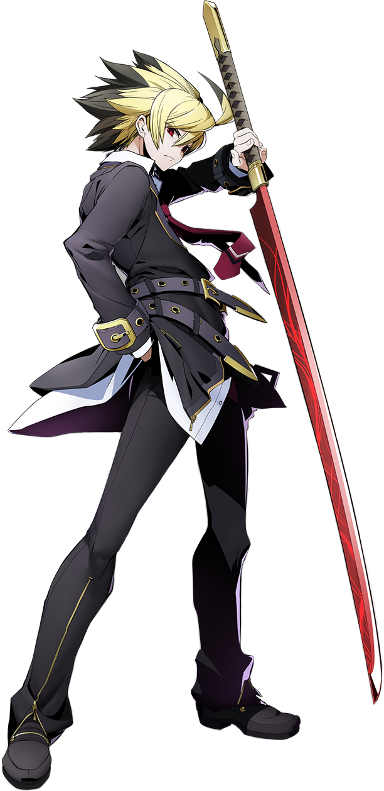

城户Hyde
← UNI2作为主角，Hyde拥有此类角色标配的“道服系”技能（飞行道具、不耗气无敌技等）。他在全距离下都能发挥出色，既能利用“圆环的凶涡(236X)”和“断绝之鸣动(2B+C)”等招式进行牵制并掩护自身接近，又能用“贯穿大地之影(22X)”（以及“断绝之鸣动(2B+C)”）反制远程角色和长距离攻击；而像66C这样的招式则能帮他拉近距离，展开连续压制。
“虚空分隔断层(214X)”提供的出色搬运能力让Hyde能轻松的将他的对手带至角落——尽管Hyde在任何位置都能造成出色的伤害，但板边则是他真正大显身手的地方。他飞快的普通技，以及通过rebeats或消耗气槽来实现自身安全或让对手防御时处于不利的多种手段，令他难以被反抢，并建立起强大且回报丰厚的打投择体系。
此外，Hyde使用剑的普通技能够造成磨血伤害，意味着即便对手甘于防守，伤害也会迅速累积。
通过这些招式名来看，我们的男主角恐怕是个不折不扣的中二病

9-10 Throw)
Hyde是一个全能型角色，几乎在任何位置都表现出色。但凭借其强大的施压能力和锁定能力，他在近身战中尤为突出。
- 扎实的立回：Hyde拥有强大的空间覆盖能力、优秀的中距离牵制技、两种飞行道具以及均衡的移动速度。
- 高伤害：Hyde能稳定打出高于平均水平的伤害，版边伤害更是进一步提升。他版边的倾泻资源的连段可以说是全游戏最强的一档。此外，他的投技可以通过版边弹墙或配合CVO来接入连段。
- 压制性进攻：Hyde擅长运用高回报的帧数陷阱、良好的rebeat帧数数据以及容易获取的加帧技来牢牢封锁对手。他还很擅长利用距离控制，配合全游戏并列最快的后撤步与对手进行猜拳博弈；由于他针对护盾的预读能带来极高回报，对他使用护盾风险极大。
- 强力防守：Hyde拥有多个无敌技（623B、招来灾祸的腥红之楔(236B+C)、向着终焉引诱的螺旋之槛(41236D)）、一个极为出色的后撤步、扎实的抢招手段、优秀的投技复合输入（191AD、3CAD）以及一个回避下段的招式（214X）。
- 磨血能力：Hyde所有用剑的普通技都能造成磨血伤害，而他的Vorpal特性会进一步提高特定招式的磨血值。
- GRD消耗：Hyde那些用来在压制中制造更大空隙的加帧连段收尾技（236A、22B、2B+C），很容易被盾挡掉，或者本身就会消耗GRD。虽然Hyde绝非必须依赖他的Force Functions——这些能力确实非常强力——但稍不留神就很容易让他输掉Vorpal Cycle。不过，他能在版边的投技连段中获得额外GRD，也能用214C连段收尾来拖延时间争取轮回，这在一定程度上能弥补上述问题。
- 板中的投技：对手在中场被投后如果立刻后受身，压起身的时机要求会变得更严格，需要你精确卡好时机使用66C或Dash3B。
 角色综评
角色总结
角色综评
角色总结
除了身为主角之外，Hyde还是一名压制型波升角色，专注于压迫与控制。他的玩法核心在于夺取Vorpal状态来提升普通技的削血伤害，并将对手推向版边来放大其伤害威胁。虽然他没有快速的择或是容易迷惑对手的套路，但他高额的伤害威胁会迫使对手做出冒险的决策。
即使没有任何资源，Hyde也相当危险，而当他手握200气时，威胁性更是大增。他的优先事项是保留气槽以提升伤害潜力，或是使用IW来终结回合。
他在中场的投技表现相对较弱，但可以利用投技将对手推向版边，在那里他的压制和伤害会变得更加危险。面对较强的牵制型角色时，Hyde的目标是迅速拉近距离，因为他在近距离有优势。而面对那些立回困难的角色，Hyde则可以充当牵制型角色。